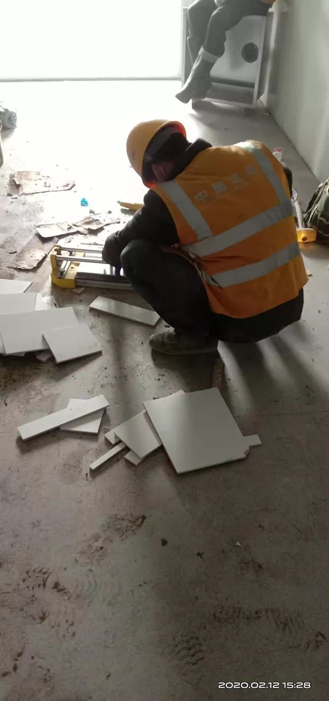
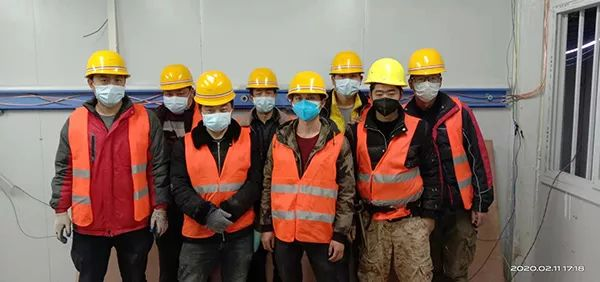
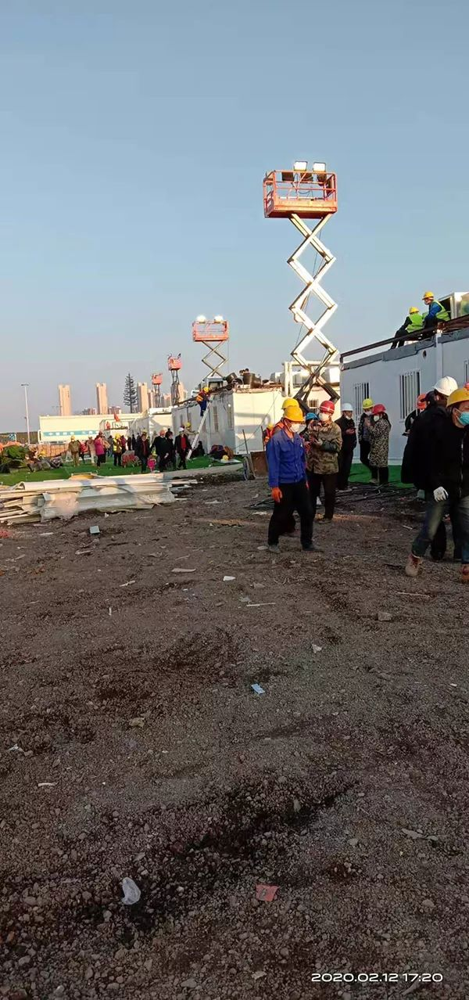

雷神山医院里的“葛政委”
原文链接 备份链接 “来之前，说实话，心里没底，恐慌，但是真正到了武汉以后，看到热火朝天的工地，那么多人在拼命干活，心就踏实下来了。 我的想法就是既来之则安之。 火神山医院交付使用的那天晚上（2.3日），我发烧，37.8，吓了个半死，吃了 …
澎湃新闻记者 邓雅菲 实习生 陈紫嘉
“我经常想，如果以后我在电视上看到关于雷神山医院的新闻，我一定会特别骄傲、自豪。我会和别人说，这栋楼是我装修的，这是我和同事们一起抢时间的地方，而且最后我们做到了，没有耽误那些需要这所医院的病人。”
2月8日，雷神山医院按时交付使用。装修技术管理人员邓毅，是雷神山医院众多建设者中的一员。
1月25日，大年初一，火神山医院建设刚刚展开，武汉市新冠肺炎疫情防控指挥部又紧急召开调度会，决定在半个月之内再建一所雷神山医院。
6天时间里，雷神山医院的规划总建筑面积3次增加，从5万平方米增加到7.99万平方米，床位从1300张增加至1600张，总体规模超过2个火神山医院，但工期却与火神山相当，这背后饱含着千百普通人的艰苦付出。
2月3日，就职于湖北藤仓建材科技有限公司旗下百年家品牌的邓毅和同事们毅然接下“英雄帖”，支援武汉雷神山医院建设。“雷神山医院的主体是活动板房，每一栋楼的主体完成之后，我和同事们要在3到5天内完成室内装修，我和团队成员共装修了3栋楼，最快3天就装修一栋。”邓毅告诉澎湃新闻（www.thepaper.cn）。
邓毅坦言，自己从前做装修也抢工期，也曾通宵达旦地干，但从没像这次这样渴望完工。他还说，刚到武汉时也会害怕被感染，“直到有一次，我看到建设者们出工时排着一眼望不到头的队，当时很感慨，这个建设团队真大啊！既然大家都不怕，我也不怕。”

邓毅及其装修团队。本文图片均为受访者提供
【邓毅的口述】
吃饭、补觉的一个小时很奢侈
每天早上，我们7点开工，但6点就要起床准备，因为住宿工棚的位置距离雷神山施工现场有将近40分钟的车程。
住宿的工棚是临时征用的，其实就是活动板房里，所以环境相对比较艰苦。
不过，来之前我们有心理准备了，而且真正在工棚里睡觉的时间也不多。大家都知道必须按时交付医院意味着什么，时间就是生命，所有工人都在加班加点，我们每天回到工棚睡觉大概都是凌晨两三点，有时甚至需要通宵作业。
大家也不是铁人，但摆在我们面前的难题确实不小，施工量大而且时间紧张。

建筑工人在夜间施工。
我主要负责装修，涉及的工作种类比较多，包括水电工、木工、瓦匠等等。我们的工作是布线、布管道，让雷神山医院能够通水通电。这个工程量可不小，要知道，医院的每间病房都配有独立的洗浴间需要独立的冷热水系统，还有照明、排风和空气净化系统。
上面给我们的要求是3到5天装修完一栋，现在我们已经按时完成了3栋的室内装修了，最快的时候3天装完一栋。

工人在室内布线。
我还要安排材料和技术工人的衔接，以及工人工作的分配。我现在负责分配15到20个工人的工作，每天早上开早会分配每个人的工作，晚上还要开晚会做当天的工作总结，并且整理出第二天要做的工作。
由于建筑材料的调配和衔接涉及的面比较宽，有的时候输送物料会延迟，有时候工序上还会出问题，比如我做到这一步了，但是上一步还没有完成。这种时候就需要等待和衔接，幸好，每个人都在尽职尽责完成自己的工作，所以这种情况还是比较少的。

工人在室内处理板材。
还有一点和平时搞装修特别不同的是，因为工期实在太短，所以每个工种的工人都同时在操作，有时候大家挤在一起，转个身都要小心翼翼，生怕撞坏了其他人的工作进度。
我们以前也抢工期，也通宵，但从没有这么渴望早点完工。
为了保证体力，中午吃饭的一个小时，成了大家补觉的时间。有时候看到睡得横七竖八的同事们一到时间就马上投入工作，真的很心疼他们，想想这一个小时真的是奢侈。
来自五湖四海的“战友”，或许再也不会相聚
在雷神山的这几天，其实很享受吃饭和睡觉前的短短一段时间。不仅是因为可以休息，更是因为可以和工人们聊聊天。
我们是一群来自五湖四海的建设者，大家因为雷神山医院聚在一起，一起施工、一起吃饭，一起聊自己家乡有意思的事情。可能我们几个人白天在工地上还会因为施工衔接的问题“急个眼”，但坐下来聊几句，就什么都过去了。
我把它叫做“革命友谊”，我们不像军人那么威风，但我觉得也是“战友”。
每天工地上的任务结束，我们会在微信群里聊天，除了相互交流工程进度和工作经验，更多的还是开开玩笑、讲讲段子，毕竟，这些也是让我们坚持下去的一股力量。
说实话，在雷神山医院赶工的这几天，和那些工人们认识的时间并不长，真正要建立起非常深厚的友谊也很困难。但是和他们并肩作战的这段时间，我肯定永远不会忘记。
大家都说，完工之后，我们应该庆祝一下，但是在这个特殊时期，聚会肯定不允许的。这是小小的遗憾，因为下一次要见这些“战友”们，不知道会是什么时候，也许，再也没机会相聚了吧。

邓毅和装修团队合影。
每天最开心的是告诉孩子：我很安全
其实在来到武汉之前，我也想过我可能会被感染，我心里也感到害怕。但是，我在电视上看到有人正月初一、初二就开始工作，我就受到了鼓舞。
我看到那么多人都为了这个疫情在工作，想想大家都没有害怕，那我还怕什么呢？

工人在雷神山医院施工。
最近老是听到“逆行者”这个词，我不敢说“逆行者”有多伟大，我只是觉得我们做的每一个决定都要对得起家里人。
我的家人一开始本来是反对我来的。父母对我说：“武汉那边疫情挺严重的，不要过去，人家说逃离武汉还来不及，你怎么还往武汉跑！”
我就告诉他们，“很多人都在为疫情尽自己的一份力，我也想做些什么。”后来他们理解并支持我了，临走前，妻子还千叮咛万嘱咐，要注意自身安全，一定做好防护。
我9岁的孩子特别舍不得我走，每天他都会发信息问我：“怎么样老爸？还好吗？什么时候回家？”然后，我每天最开心也是最踏实的时候，就是告诉孩子和家人，“我很安全”。
在这样特殊的地方工作，不知道为什么，我变得特别想家，特别想念父母、妻子和孩子，不过，我没有和他们说太多，因为怕他们会担心。
我经常想，如果以后我在电视上看到关于雷神山医院的新闻，我一定会特别骄傲，特别自豪。我会和别人说，那是我和同事们一起抢时间的地方，而且最后我们做到了，没有耽误那些需要这所医院的病人。
本期编辑 常琛
推荐阅读


原文链接 备份链接 “来之前，说实话，心里没底，恐慌，但是真正到了武汉以后，看到热火朝天的工地，那么多人在拼命干活，心就踏实下来了。 我的想法就是既来之则安之。 火神山医院交付使用的那天晚上（2.3日），我发烧，37.8，吓了个半死，吃了 …
原文链接 备份链接 【财新网】（记者 周泰来 实习记者 黄晏浩 陈丽金）武汉火神山医院援建工人出现新冠感染。据湖南省湘潭市卫健委发布，截至2月13日24时，湖南湘潭援建武汉火神山医院的69名建筑工人中有两人确诊新冠肺炎。目前工人感染新冠的 …
原文链接 备份链接 ** 在武汉这座几乎停摆的城市里，一群外卖小哥和他们背后的团队还在正常运转。他们需要每天前往收治新冠肺炎的定点医院，给一线医护人员送餐，是连接这座城市的动线。这项“医护关爱计划”，是在1月26日开始的，饿了么联 …
原文链接 备份链接 从1月22号开始，宝莉就在武汉金银潭医院支援。她之前的工作也和养老、死亡有关，这次来到金银潭救助病人，可能也是冥冥之中，上天的安排吧。 文 | 吴蕴博 最后一次聊天的时候，宝莉告诉我，她的父亲两年前因为车祸去世了，母亲 …
原文链接 备份链接 作者 | 王晓 编辑 | 杨颢 出品 | 棱镜·腾讯小满工作室 欢迎下载腾讯新闻APP，阅读更多优质资讯 “（款项结算）非常及时、高效，减轻了我们公司在承接项目时的资金垫付压力。”2月10日，湖北恒祺建筑装饰工程有限公 …